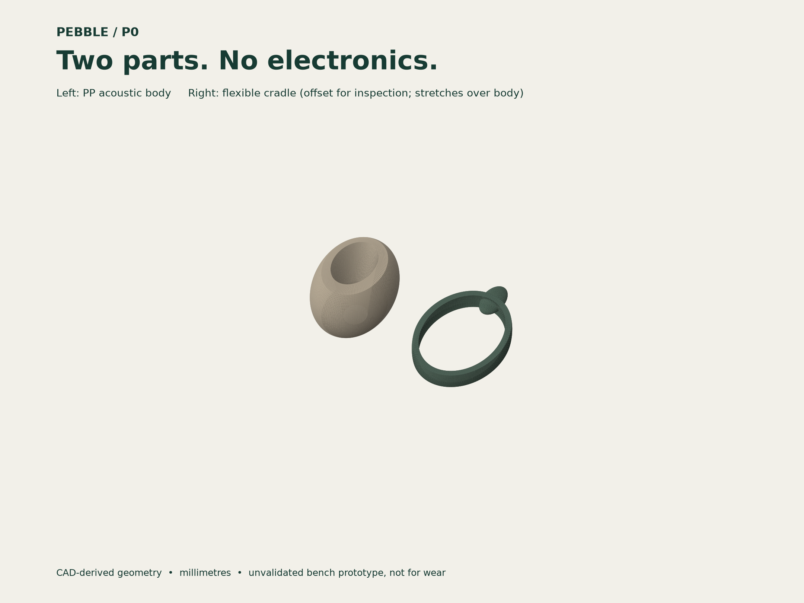
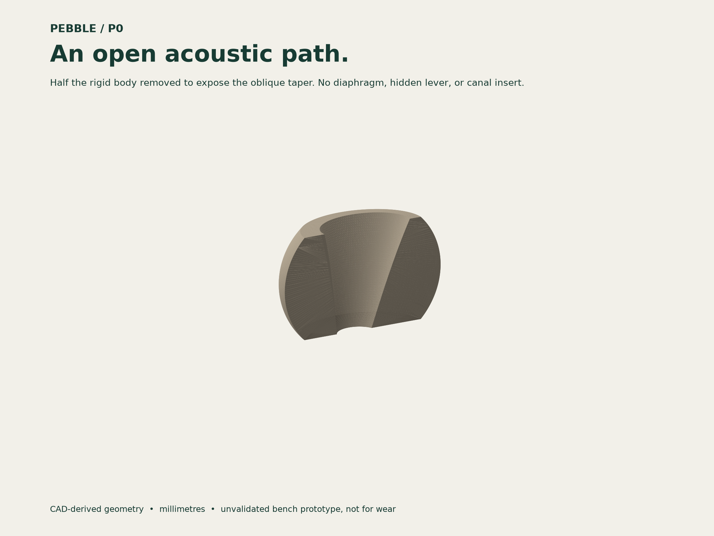
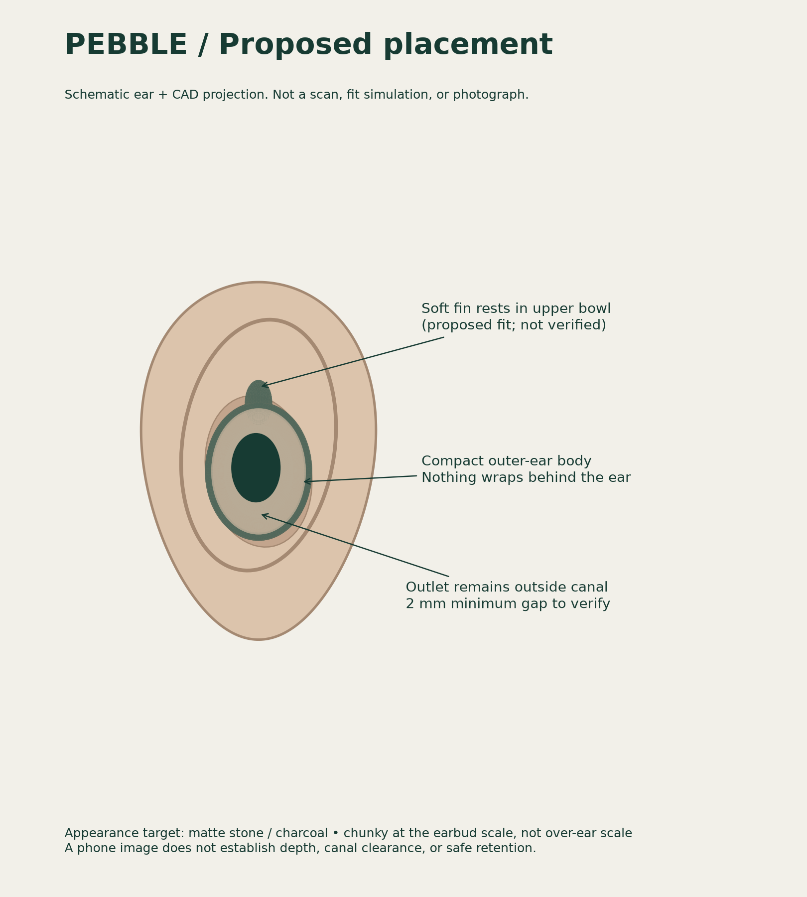
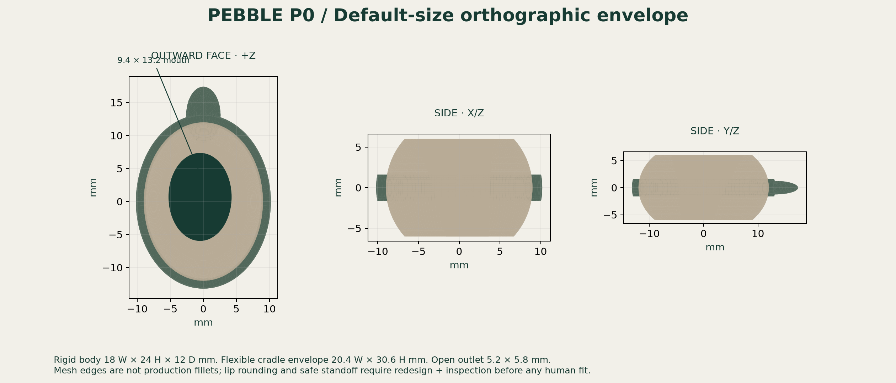

18 × 24 × 12mm · default rigid body W × H × D
2 partsrigid acoustic body + compliant cradle
2.93 gcalculated mass · not a weighed prototype
Inspect the two parts

The flexible collar stretches over the body. Retention, material grade, edge rounding, cleaning and strength still require engineering validation.
See the actual acoustic path

No fictional hidden amplifier. This short open taper is a test baseline. It is not proven to provide useful speech-band insertion gain.
Outer-ear placement only

Schematic, not an anatomical fit simulation. The outlet must remain outside the canal. Photo measurements cannot establish a safe depth or gap.
Editable dimensions

The phone tool exports calibrated, manually marked dimensions. The Python builder produces customized fixture CAD; it does not produce a medically fitted insert.
Compare the fitted body with an unaided ear simulator across speech frequencies, multiple angles and repeated fittings. Reject or redesign it if it fails to improve useful sound. Neither a rendering nor a watertight STL proves a hearing aid works.